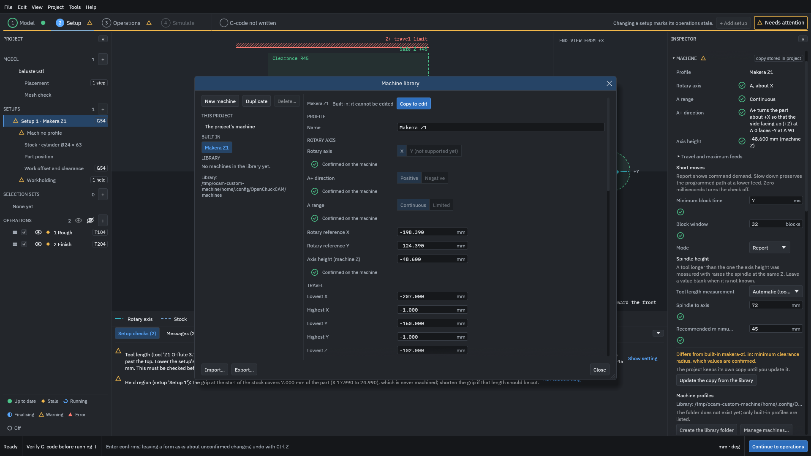
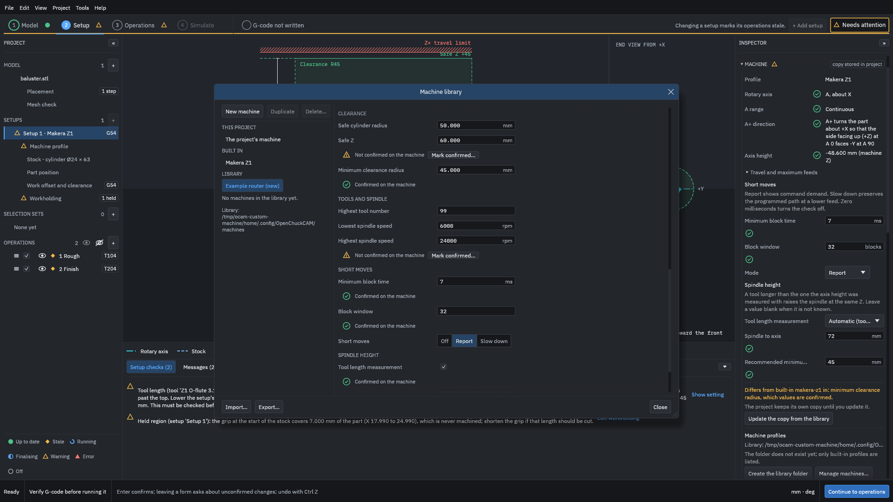
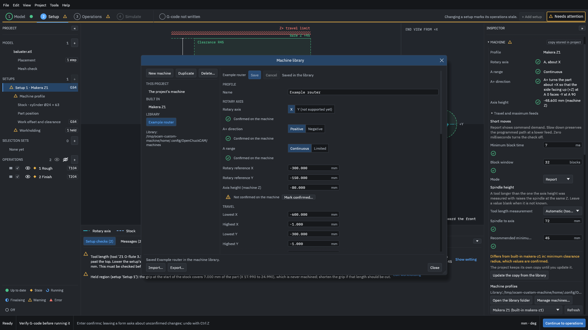
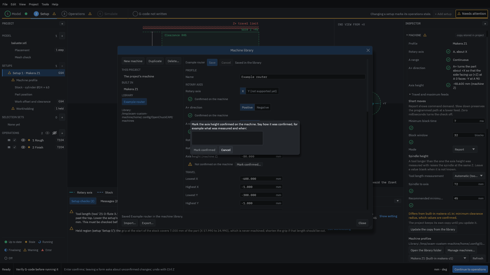

Create a custom machine
This example makes a machine profile for a machine that is not built in, saves it in your machine library, and uses it in a project. The machine is a made-up 4-axis router, called “Example router”, with round numbers: it is not a real machine, so its values are for the example only. Copy the steps, but put in your own machine’s values. Machine profiles describes every field.
Warning
A machine profile you make is yours to check. The program checks every program it writes against the profile, so a wrong value, such as the height of the rotary axis or a travel limit, makes those checks wrong too, without any warning. Measure each value on your machine, confirm it, and run an air cut before anything else. Generated G-code must be verified by you before it is run on a machine.
You need the tutorial’s finished project, testdata/examples/baluster/baluster-project. Copy it to a folder of your own and open the copy with File > Open project, so the example in the repository stays as it is.
Note
The example project places the part 17.99 mm from the headstock face (Offset along X and Zero at X in the setup), the length of the project owner’s supplied chuck. It is not a value for your machine: for your own parts, measure the distance from the face of the headstock body to the face of your chuck where the stock starts, with your jaws fitted and gripping as you will grip, and use that number. See Set up the stock.
1. Find the machine section
- Click Setup at the top of the window.
- In the project panel, under Setup 1, click Machine profile. The Inspector shows the project’s machine, the built-in Makera Z1.
- Find Machine profiles at the bottom of the Inspector; in a smaller window, scroll the Inspector down to it.

The library folder does not exist until you save a profile in it, or click Create the library folder.
2. Copy the built-in profile
Starting from a copy is quicker than New machine, which leaves 18 values for you to fill in. A copy keeps every value of the profile it came from until you change it, including the marks that say a value was confirmed on that machine.
- Click Manage machines…. The machine library window opens.
- Under BUILT IN, click Makera Z1. It says “Built in: it cannot be edited”.
- Click Copy to edit. A new profile, “Makera Z1 copy”, appears under LIBRARY as “(new)”: it is a draft, and nothing is written until you save.


3. Describe the machine
Type each value and press Enter. For the example router:
| Field | Value | Why |
|---|---|---|
| Name | Example router | The name in lists. |
| Rotary reference X, Y | -300, -150 mm | A point on the rotary axis, in machine coordinates, where the controller works from: on the Z1, the centre of the headstock face next to the chuck. |
| Axis height (machine Z) | -80 mm | The machine Z of the rotary axis. Every Z the program writes is measured from it. |
| Lowest X, Lowest Y, Lowest Z | -600, -300, -120 mm | The travel limits. The highest stay at the Z1’s -1 mm here; on your machine, type its own. |

Scroll down the form and go on:
| Field | Value |
|---|---|
| X and Y feed, Z feed, A feed | 3000 mm/min, 1500 mm/min, 7200 deg/min |
| X and Y rapid, Z rapid, A rapid | 5000 mm/min, 3000 mm/min, 7200 deg/min |
| A in the feed word | Separate, because the router runs LinuxCNC; the Z1 uses Makera |
| Safe Z | 60 mm |
| Safe cylinder radius | 50 mm |
| Highest tool number | 99 |
Set Safe Z before Safe cylinder radius: the safe Z cannot be below the safe cylinder, and a radius of 50 mm is refused while the safe Z is still the Z1’s 45 mm.

Scroll further, and set Highest spindle speed to 24000 and Lowest spindle speed to 6000 rpm. An operation whose spindle speed is outside this range cannot be posted.


Figure 5 shows the trap of a copy. Minimum block time, Tool length measurement, Spindle to axis and Recommended minimum safe Z were not changed, so they are still the Z1’s values, and every one of them still says “Confirmed on the machine”. Go through every field, and type in your own machine’s value even where it looks right. A typed value is marked unconfirmed until you confirm it.
4. Save the profile
- Scroll to the top of the form.
- Click Save. The draft becomes “Saved in the library”, and the window says “Saved Example router in the machine library.”


example-router.toml, in the library folder.Export… writes the profile to a file you can keep or share, and Import… reads one.
5. Confirm what you measured
When you have measured a value on the machine, click Mark confirmed… next to it and say how you confirmed it, for example “Measured with the probe on the chuck face, 7 Nov 2026”. Do not confirm a value you have not checked: the mark is what tells you, and anyone you share the profile with, that the value is real.


Confirm machine profile values says how to check each one.
6. Use it in the project
- Click Close to close the machine library window.
- In Machine profiles, open the list and choose Example router.
- Click Use this machine. The project takes its own copy of the profile.

Read the result
The setup checks now say:
- “Safe Z cannot be checked against the Z travel: the machine’s axis height is not confirmed on the machine.” Confirm the axis height, and this check can be made.
- “Tool length (tool ‘Z1 ball 3.175x22’, setup ‘Setup 1’): tool 204 may take the spindle above the top of the Z travel at the safe Z: …”. The profile still has the Z1’s Spindle to axis of 72.0 mm, and a safe Z of 60 mm leaves too little room above it for this tool.
- “Tool length (tool ‘Z1 O-flute 3.175x25’, setup ‘Setup 1’): tool 104 may be too long to clear the workholding within the Z travel: …”. The copy also keeps the Z1’s Minimum clearance radius of 45 mm, which is for the Z1’s own chuck and jaws, and this longer tool cannot clear it within the Z travel. Measure the router’s spindle-to-axis distance and its workholding’s clearance and set them; then lower the safe Z or use shorter tools if the warning remains. A tool that may take the spindle past the top of its travel is a possible collision, so if the warning is still there when you export, the export asks you to acknowledge it before it writes anything.
The status bar counts the unconfirmed values: “5 machine values unconfirmed”. Every operation is now out of date, because the machine changed; generate them again before you post.
On the command line
The command line uses the same library:
openchuck-cli machines --library ~/.config/OpenChuckCAM/machines
openchuck-cli machine baluster example-router --library ~/.config/OpenChuckCAM/machines
The first lists the profiles, with how many values are unconfirmed; the second gives the project a copy of the example router and prints every value with confirmed or UNCONFIRMED. See Command line.
Common mistakes
- A value is refused with a red message
- For example “The safe Z (45 mm) must not be below the safe cylinder radius (50 mm).” Change the other value first, then type this one again.
- The profile was copied, but not every value was checked
- Values you do not change keep the source machine’s values and marks. Go through every field.
- A in the feed word does not match the post
- The profile’s A in the feed word must match the feed rule of the post you export with (Separate for the LinuxCNC post, Makera for the Makera Z1 post). The program does not check that they match.
- The machine is not 4-axis with A turning about X
- It cannot be described: only a rotary axis about X is supported.